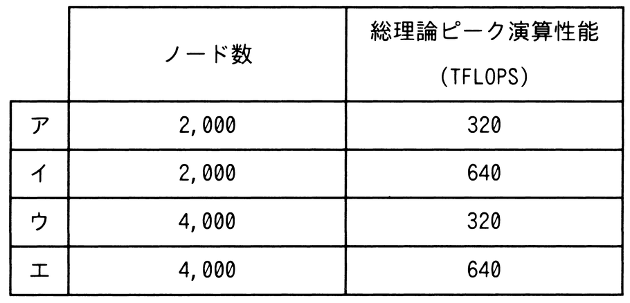

現状のHPC（High Performance Computing）マシンの構成を，次の条件で更新することにした。更新後の，ノード数と総理論ピーク演算性能はどれか。ここで，総理論ピーク演算性能は，コア数に比例するものとする。
〔現状の構成〕
（1）一つのコアの理論ピーク演算性能は10GFLOPSである。
（2）一つのノードのコア数は8である。
（3）ノード数は1,000である。
〔更新条件〕
（1）一つのコアの理論ピーク演算性能を現状の2倍にする。
（2）一つのノードのコア数を現状の2倍にする。
（3）総コア数を現状の4倍にする。
